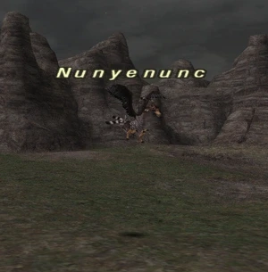
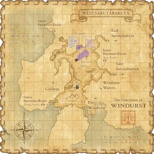

Level 75 reference · Zenith rules
|
Family: Bird Notorious Monster |
 |

| Zone | Level | Drops | Steal | Spawns | Notes |
|---|---|---|---|---|---|
| West Sarutabaruta | 10-12 | 1 | H ~330 HP |


Notes
- Lottery Spawn from the Carrion Crows in the area spanning (H-5), (H-6), and (I-5).
- Average spawn time is approximately 2 hours. Has been known to take over 4 hours to spawn.
- Placeholders respawn approximately every 5 minutes.
- The placeholder appears is the Top Carrion Crow of the second group of 3 on Wide Scan when in (H-5).
- Nunyenunc appears on Wide Scan at the bottom of the same group of 3 Carrion Crows in place of the PH.
- Extremely resistant to Light-based effects.
- Immune to Requiem.
- Takes half damage from Banish, Banish II, Banish III, and Holy.
- Soloable by most jobs at level 20, see tesimonials.
Notes (Nyzul Isle)
- The Armoury Crate it leaves behind contains a ??? Polearm, which may rarely appraise into a Pilgrim's Wand.
Adapted from Eden Wiki: Nunyenunc · Contributors and history · CC BY-SA 4.0. Revision 46605. Layout, links and optional background text adapted for Zenith.